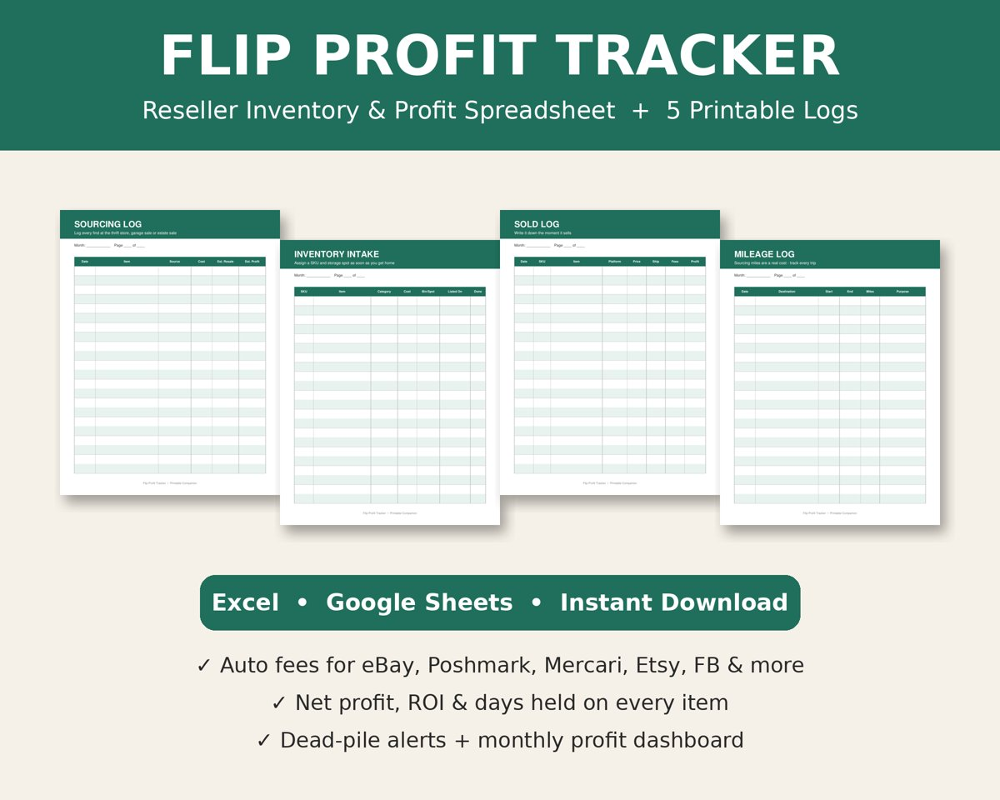
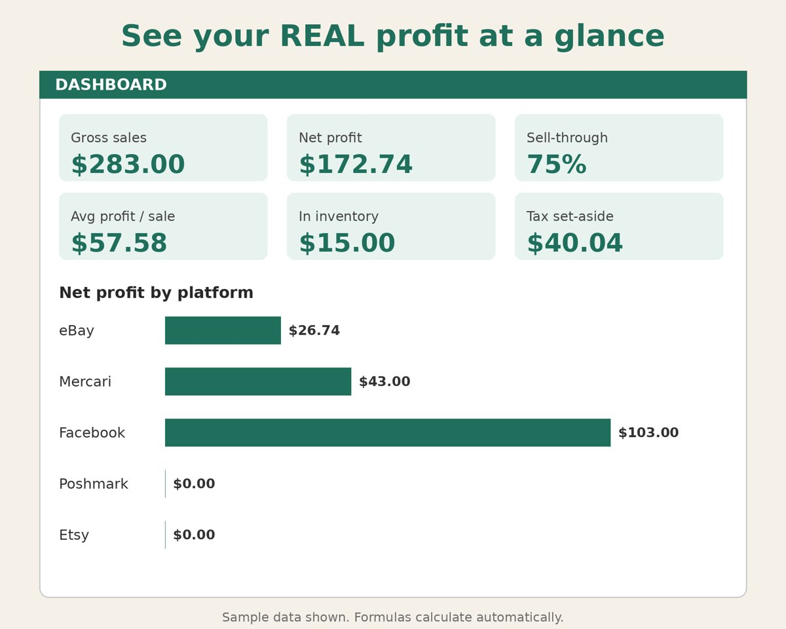
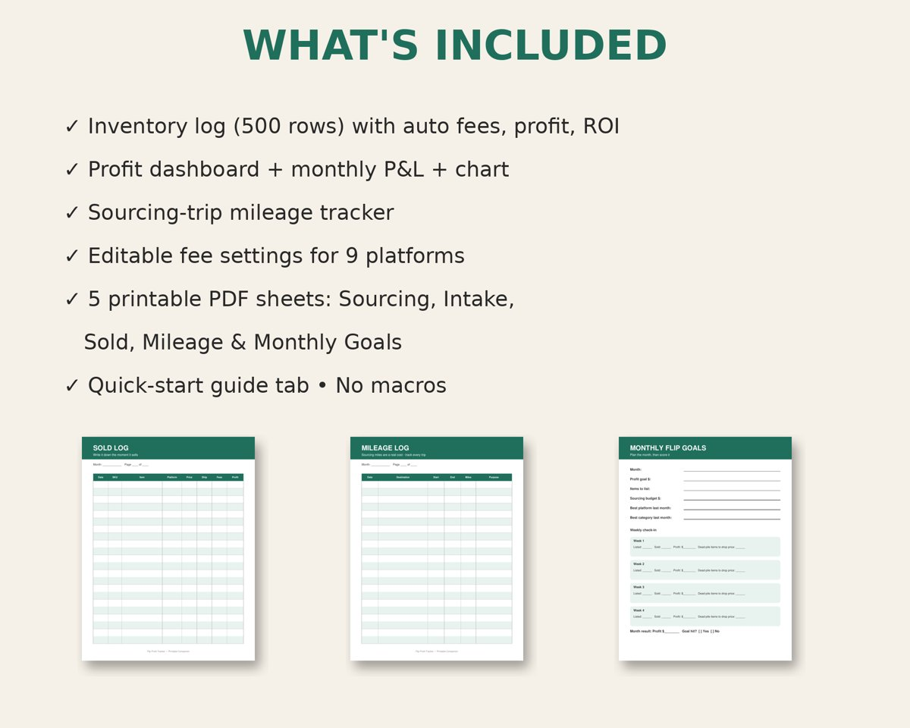

Know your real profit on every flip.
These spreadsheets and printables help thrift, garage-sale and online resellers track their inventory, fees and profit.
Get the Flip Profit Tracker – $9.99Flip Profit Tracker
$9.99 instant download



- Inventory log with 500 rows that works out platform fees, net profit, ROI and days held automatically
- Fee presets for eBay, Poshmark, Mercari, Etsy, Facebook, Depop, Whatnot and more, all editable
- A dashboard with profit by platform and category, monthly profit, and alerts for items that sit unsold
- A sourcing-trip mileage tracker
- 5 printable PDF logs: Sourcing, Intake, Sold, Mileage and Monthly Goals
- Works in Excel, Google Sheets and LibreOffice, with no macros
This is a digital product, so nothing is shipped. The fee presets are estimates; check them against each platform’s current fees.
About
Flip Profit Tools makes simple, practical tools for people who buy low and sell high. Our goal is to make it easy to see which flips, platforms and categories actually make you money, without paying for monthly software.
Contact
Have a question or a problem with a file? Send us a message through our Payhip store page.